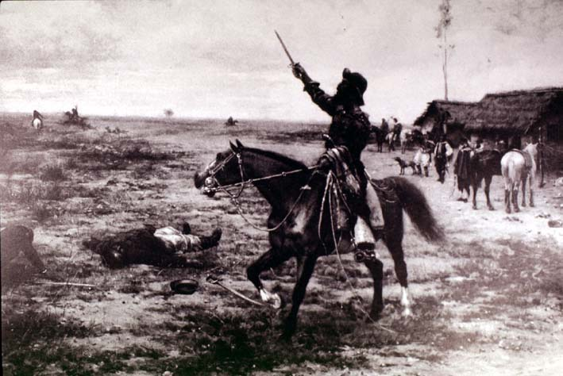

|
|  |
|
Angel Della Valle, Juan Moreira
|
In Argentina, the earliest antecedents of criollismo –the cult of the Pampean cattle herdsman and knife fighter, the gaucho, a social type who was quickly disappearing under the pressure of agro-industrial modernisation– coincide with the final consolidation of state power over the last remaining regional militias (montoneras), with which backland popular culture had until then been associated. José Hernández´ La vuelta de Martín Fierro (1879) was the first (and last) gauchesque poem to be universally acclaimed by the literary establishment; Ernesto Quesada´s El criollismo en la literatura argentina (1902) the first systematic attempt to canonise an 'authentic' vernacular popular tradition and distinguish it from contemporary mass-cultural appropriations and 'degenerations' it had suffered, according to Quesada, on entering the cosmopolitan and politically dangerous city. One of the products against which Quesada ranted were the adventure novels of Eduardo Gutiérrez, most famously Juan Moreira (1879-80), the serialized life of a rural outlaw. Nonetheless, Moreira was considered a respectable enough subject to figure on a painting from 1891 by Angel Della Valle, an artist who specialised in scenes of a Pampean frontier the 'Desert Campaign' of 1879 claimed to have catapulted into history, from where it reappeared as a symbolic site of national memory.
|